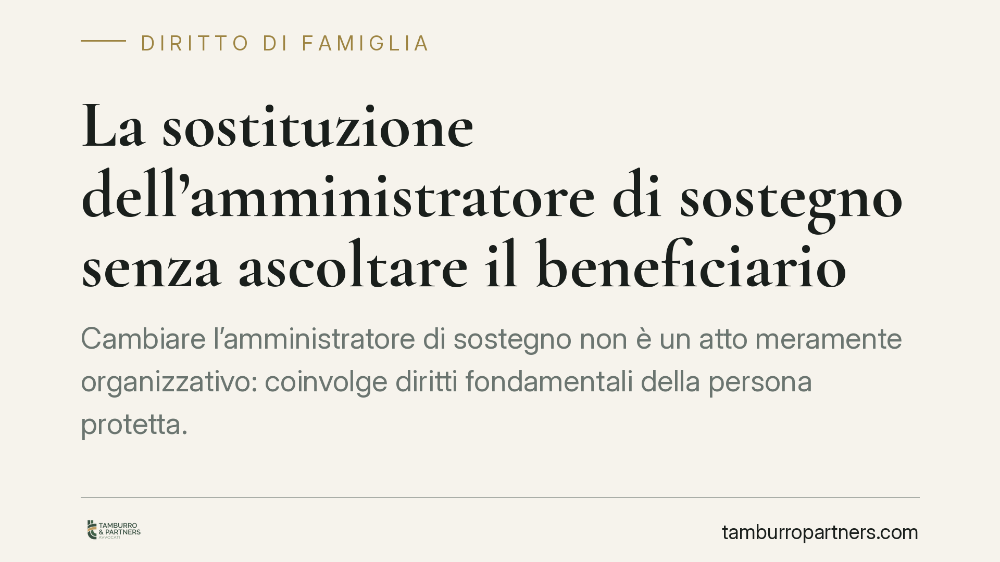

La sostituzione dell'amministratore di sostegno senza ascoltare il beneficiario
Cambiare l'amministratore di sostegno non è un atto meramente organizzativo: coinvolge diritti fondamentali della persona protetta. La giurisprudenza valorizza l'obbligo di ascoltarla anche nella fase di sostituzione. Vediamo il fondamento normativo, il tipo di vizio che può derivare dall'omessa audizione e cosa può fare il familiare o il professionista coinvolto.

Il caso
Una madre chiede la sostituzione dell'amministratore di sostegno — un professionista — nominato per la figlia affetta da patologia psichiatrica. Il giudice tutelare provvede senza che la beneficiaria venga sentita personalmente. La questione arriva davanti alla Corte di Cassazione, chiamata a stabilire se l'omessa audizione della persona protetta incida sulla validità del provvedimento di modifica.
> Nota redazionale: gli estremi dell'ordinanza (n. 23242, data 15 luglio 2026) riportati dalla fonte secondaria non risultano al momento verificabili sui repertori ufficiali. Trattiamo pertanto il tema come principio giurisprudenziale in via di consolidamento, non come precedente definitivo. Prima di ogni utilizzo in sede difensiva è necessario confermare gli estremi presso fonte ufficiale.
Inquadramento normativo
L'amministrazione di sostegno è stata introdotta dalla Legge 9 gennaio 2004, n. 6, che ha inserito gli artt. 404 e seguenti del codice civile. È uno strumento pensato come alternativa più flessibile e meno invasiva rispetto all'interdizione e all'inabilitazione: mira a proteggere chi si trova in condizione di fragilità limitando il meno possibile la sua autonomia. Il beneficiario conserva la capacità di agire per tutti gli atti che non richiedono l'intervento dell'amministratore.
Sul piano della partecipazione, l'art. 407, comma 2, c.c. prevede che il giudice tutelare debba «sentire personalmente la persona cui il procedimento si riferisce». La norma è collocata nella disciplina del procedimento di nomina, ma la giurisprudenza ne ha esteso la ratio anche alle fasi successive — modifica, revoca e sostituzione — trattandosi di decisioni che incidono direttamente sulla sfera personale del beneficiario. A completare il quadro processuale intervengono l'art. 720-bis c.p.c., che regola il procedimento e i mezzi di impugnazione (il reclamo), e gli artt. 44 e 45 disp. att. c.c. sui poteri di vigilanza e sull'attività del giudice tutelare.
L'ascolto, dunque, non è un adempimento formale: è il momento in cui la persona protetta esprime la propria posizione su chi debba assisterla e come.
Quale vizio deriva dall'omesso ascolto
Occorre chiarezza terminologica, perché il tema è spesso trattato con parole intercambiabili. La partecipazione del beneficiario attiene al corretto svolgimento del contraddittorio. La sua omissione integra un vizio del provvedimento, che si fa valere attraverso il reclamo previsto dall'art. 720-bis c.p.c. contro il decreto del giudice tutelare. In altri termini: il rimedio tipico non è un'azione autonoma di nullità, ma l'impugnazione del provvedimento nella sede sua propria.
La scelta di parlare di «nullità» o di «invalidità» del provvedimento va quindi calata nel meccanismo processuale: il vizio esiste, ma si contesta reclamando nei termini e nelle forme previste, non lasciando il provvedimento in una condizione di perenne contestabilità.
Implicazioni pratiche
Per il familiare che chiede la sostituzione, il messaggio è duplice. Da un lato, la richiesta è legittima e prevista dall'ordinamento; dall'altro, non basta la volontà di chi la propone: il procedimento deve dare voce al diretto interessato. Un provvedimento adottato saltando questo passaggio è esposto al reclamo.
Per l'amministratore professionista uscente o entrante, la partecipazione del beneficiario è una garanzia anche per la solidità del proprio incarico: un decreto assunto nel rispetto delle regole procedurali è meno vulnerabile a contestazioni successive.
Sullo sfondo resta il principio che dà senso all'intero istituto: la dignità della persona protetta e il suo diritto a partecipare alle scelte che la riguardano. La fragilità non cancella la titolarità dei diritti; ne rende semplicemente più delicato l'esercizio.
Cosa fare in concreto
- Verifica che l'istanza di sostituzione indichi con precisione le ragioni concrete della richiesta, evitando motivazioni generiche.
- Sollecita al giudice tutelare la fissazione dell'audizione personale del beneficiario, ove le condizioni lo consentano, o le modalità alternative di ascolto.
- Documenta ogni elemento utile a dimostrare l'interesse del beneficiario alla sostituzione (relazioni sanitarie, rendiconti, criticità nella gestione).
- Controlla i termini per il reclamo ex art. 720-bis c.p.c. se il provvedimento è stato adottato senza ascolto: la contestazione ha finestre temporali precise.
- Nelle situazioni complesse è opportuno un confronto legale preventivo, per impostare correttamente istanza e contraddittorio.
Contributo informativo a cura di Tamburro & Partners - Avv. Giuseppe Tamburro. Non costituisce parere legale.
Ogni famiglia ha il suo equilibrio.
Separazione, divorzio, affidamento, assegno: se vuoi un confronto riservato su una specifica situazione, scrivi allo studio. Ti rispondiamo entro un giorno lavorativo.